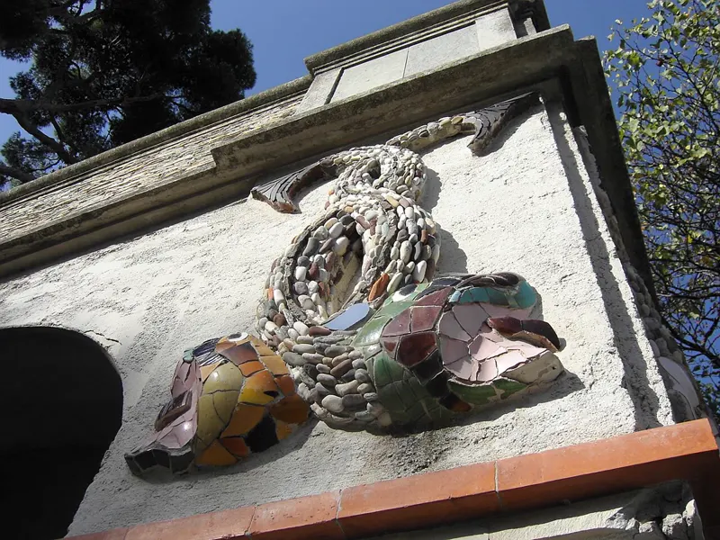
Nice
Colline du Château
La vista sulla Baie des Anges, il porto e la Vieux-Nice, a pochi minuti a piedi dalla Promenade. Perfetto al tramonto.
Per un date
Tramonti, passeggiate in riva al mare, giardini, musei, gite: i posti della Costa Azzurra che non deludono mai, più le dritte dei nostri partner.

Nice
La vista sulla Baie des Anges, il porto e la Vieux-Nice, a pochi minuti a piedi dalla Promenade. Perfetto al tramonto.
Nice
I sentieri immersi nel verde sopra il porto, i punti panoramici sulla rada di Villefranche e sul mare: relax, vista pazzesca, l'ideale per una passeggiata a due.
Cannes
Il centro storico di Cannes, in cima ai suoi vicoli: vista sulla baia, sul porto e sulle isole di Lérins.
Toulon
Si sale in funivia sopra la rada di Toulon: vista panoramica sul mare e sulla città.
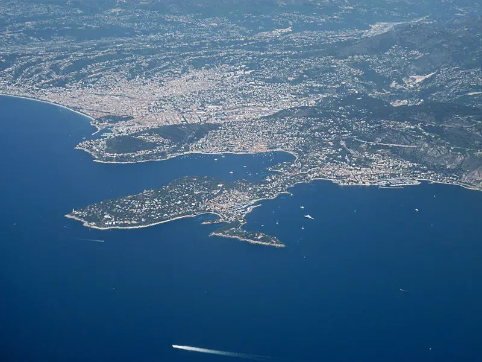
Saint-Jean-Cap-Ferrat
Una camminata tra pini e calette dall'acqua turchese, con spot perfetti per rilassarsi e fare un bagno.
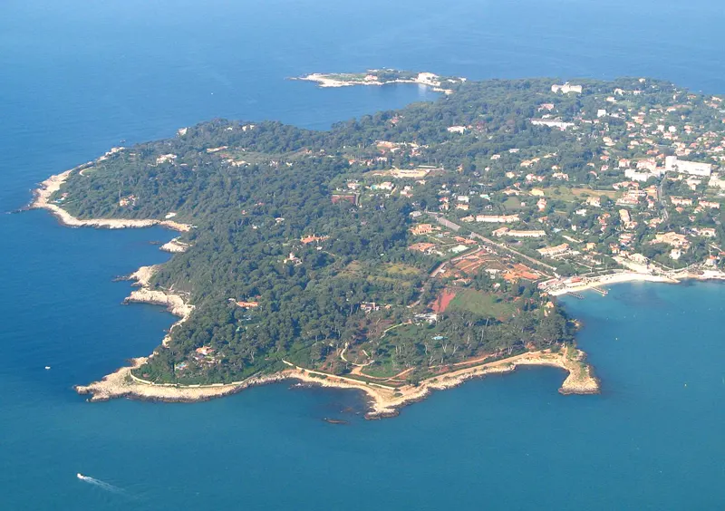
Antibes
Il sentiero scavato nella roccia a picco sul mare, in fondo a Cap d'Antibes: spettacolare a fine giornata.
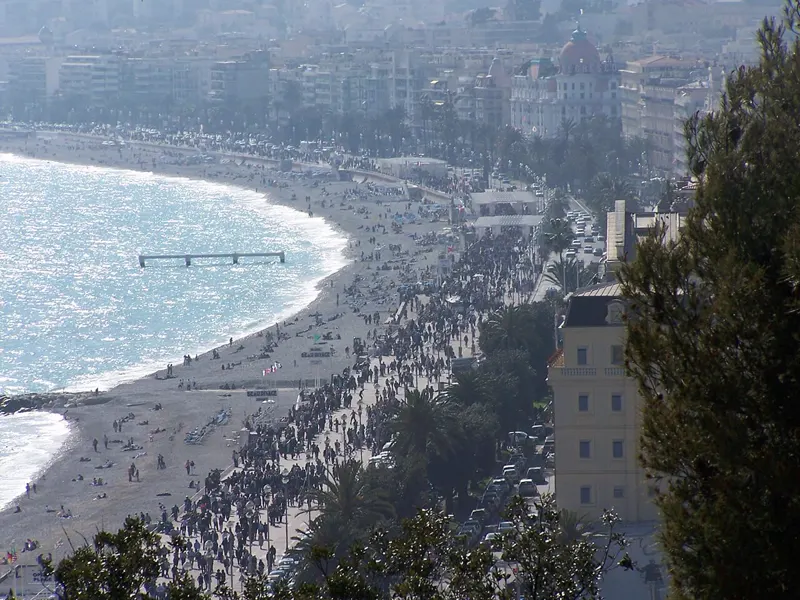
Nice
Il grande classico: la passeggiata in riva al mare, un gelato, le sedie blu e il tramonto.
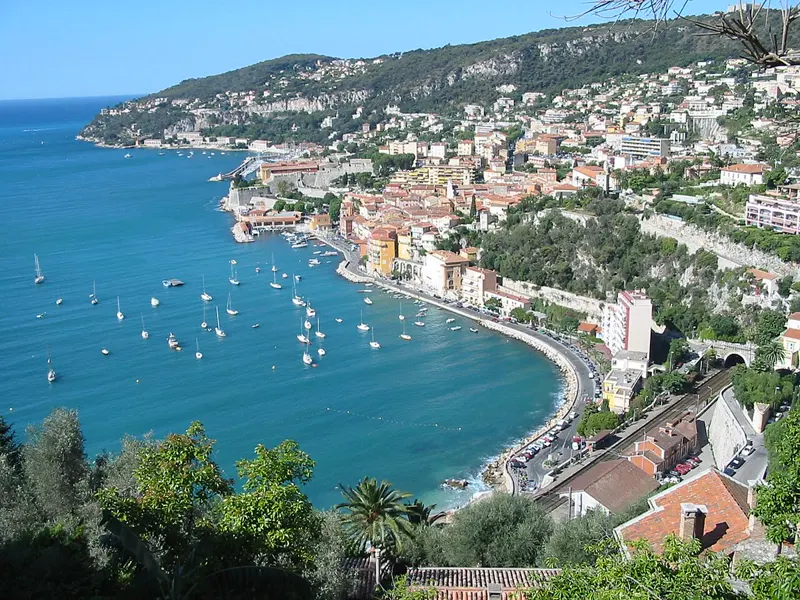
Villefranche-sur-Mer
Una delle rade più belle del Mediterraneo, con le sue case colorate e i localini sul porto.
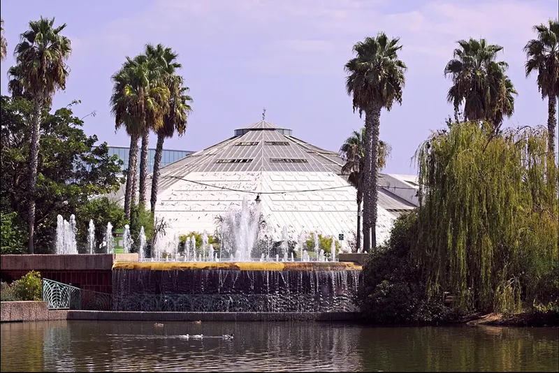
Nice
Il parco floreale di Nice, con la sua enorme serra tropicale e i suoi animali: un'uscita originale e tranquilla.
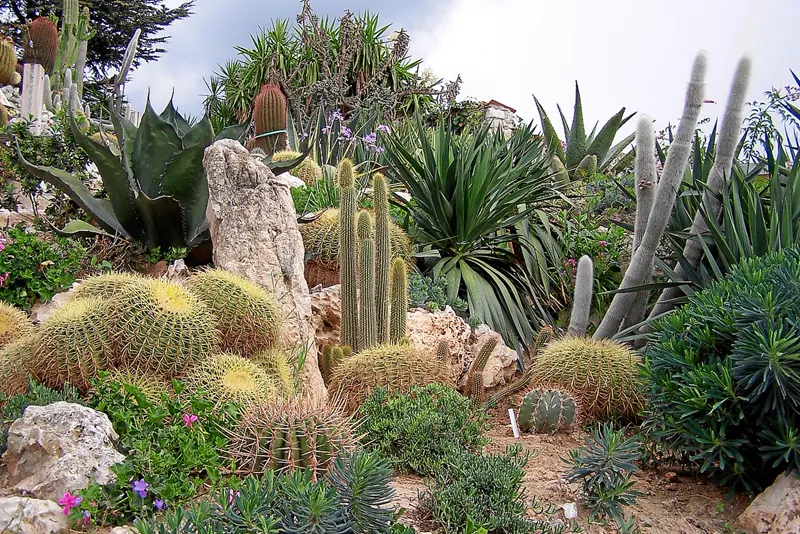
Èze
Cactus, mare a perdita d'occhio e il borgo arroccato di Èze tutto intorno: super romantico.
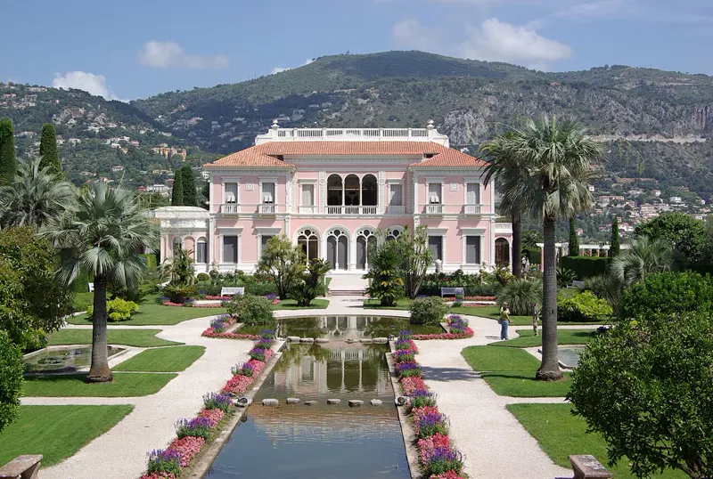
Saint-Jean-Cap-Ferrat
Nove giardini a tema a picco sul mare e una villa Belle Époque.
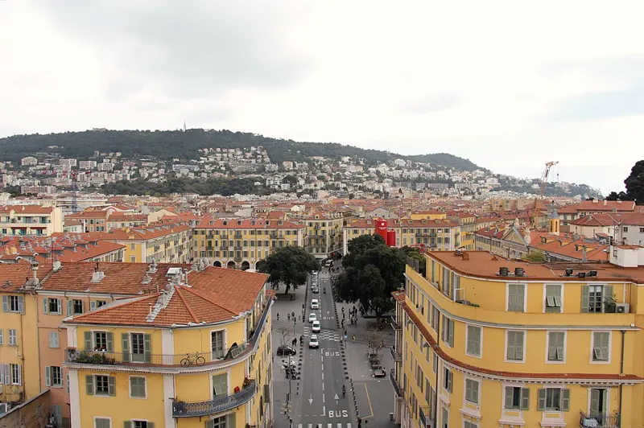
Nice
Il Musée d'Art Moderne et d'Art Contemporain di Nice, con la sua terrazza sul tetto con vista sulla città.
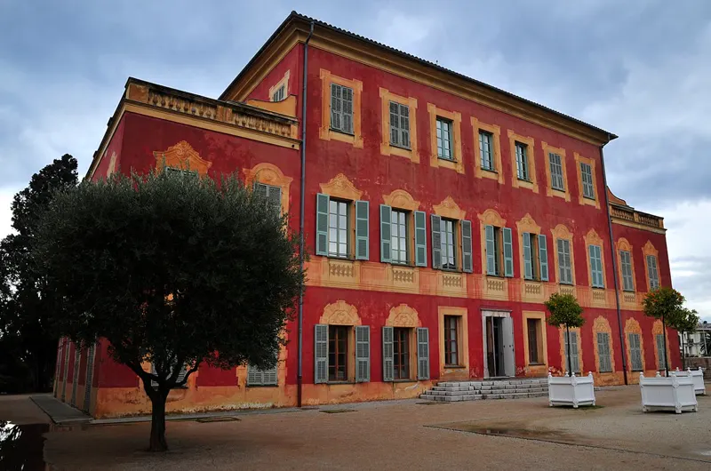
Nice
In una villa rossa immersa tra gli ulivi di Cimiez: le opere di Matisse e un parco perfetto per passeggiare dopo la visita.
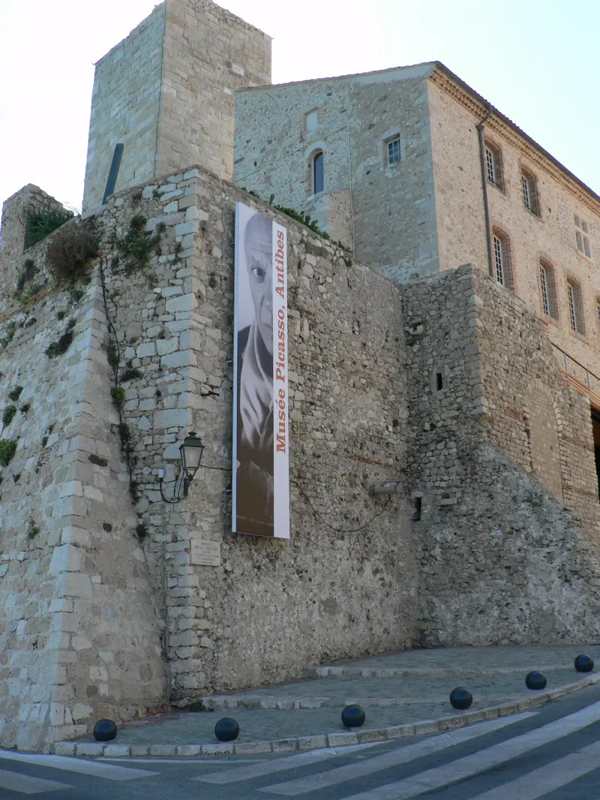
Antibes
Le opere di Picasso in un castello a picco sul mare, con una terrazza sui bastioni.
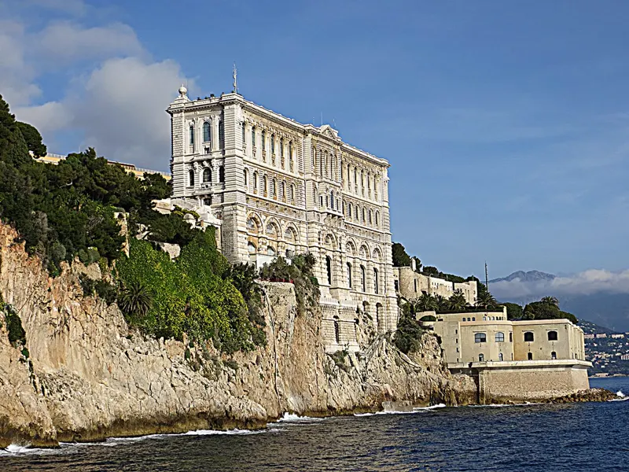
Monaco
Il museo sulla Rocca, i suoi acquari e la terrazza vista mare.
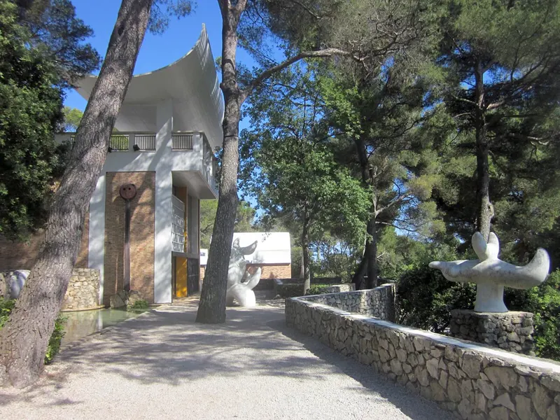
Saint-Paul-de-Vence
Arte moderna tra i pini e poi una passeggiata nel borgo di Saint-Paul-de-Vence.
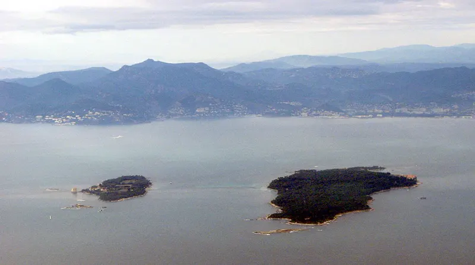
Cannes
Quindici minuti di barca da Cannes: pinete, calette e picnic con i piedi nell'acqua.
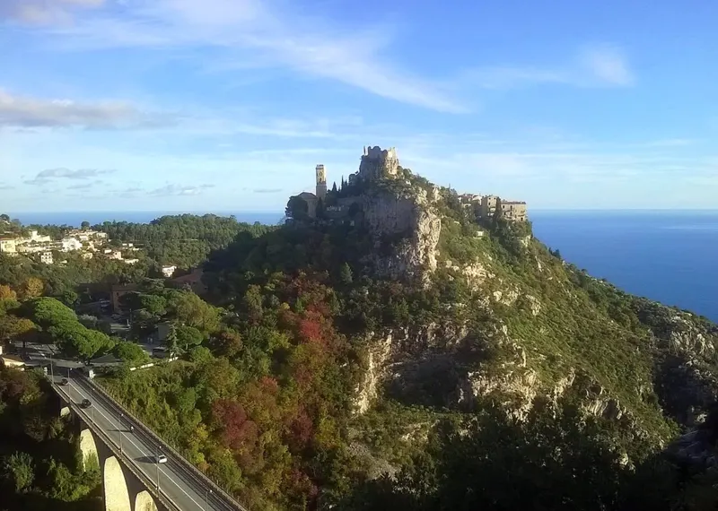
Èze
Il borgo medievale a picco sul mare, con i suoi vicoli in pietra e le sue terrazze.
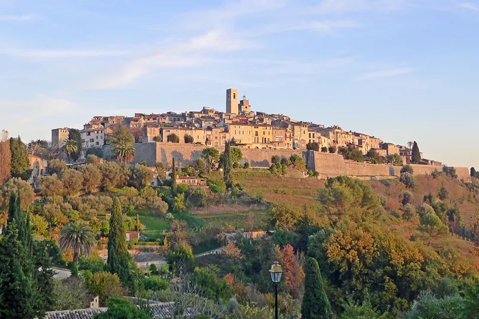
Saint-Paul-de-Vence
Il borgo fortificato degli artisti: gallerie, mura e vista dalle colline fino al mare.

Bar · Cannes
Night bar chic e intimo che serve cocktail creativi e distillati. Il locale dispone di una terrazza e propone serate a tema animate da DJ fino alle 2:30.
♥ L'atmosfera chic e intima accompagnata da cocktail creativi lo rende la cornice ideale per un appuntamento serale.

Bar · Cannes €€
Bar da festa con cocktail, birre e shottini e una bella terrazza. Il locale organizza tornei di beer pong, serate karaoke e DJ set in un'atmosfera studentesca super vivace.
♥ La sua atmosfera musicale ritmata e i cocktail signature lo rendono un posto vivace per bere qualcosa in due.

Bar · Nice
Rumeria dall'atmosfera super carica e arredata come la stiva di una nave, con oltre 100 tipi di rum, rum aromatizzati e cocktail.
♥ Un bar accogliente per bere qualcosa e provare ottimi cocktail aromatizzati in due.

Ristorante · Nice €€
Ristorante mediterraneo e italiano allestito sotto una veranda con bancone centrale. Di sera, il locale si accende con DJ set per fare festa.
♥ La location curata sotto la veranda e la cucina mediterranea offrono una cornice elegante per una cena a due.

Bar · Nice €€
Questo lounge bar al piano terra è rinomato per l'ampia selezione di gin, i cocktail creativi e le sue varianti di Spritz. Offre un'atmosfera rilassata per farsi un drink prima di continuare la serata.
♥ La ricca carta di gin e cocktail personalizzabili crea un contesto conviviale ideale per chiacchierare davanti a un drink.

Bar · Antibes €€
Lounge bar pop-up aperto in stagione fronte mare al Bastion Saint-Jaume, con serate a sorpresa durante il resto dell'anno. Qui si gustano cocktail e taglieri da condividere con sottofondo musicale chill o festaiolo.
♥ Lo spot offre una cornice spettacolare per un drink a due al tramonto di fronte al mare.

Bar · Nice €€
Bar festoso nel Carré d'Or di Nizza che propone cocktail della casa e tapas da condividere, in un'atmosfera animata da serate a tema e DJ set.
♥ Un ambiente accogliente, ideale per condividere tapas e un cocktail per un primo drink a due.

Bar · Mandelieu-la-Napoule €€
Irish pub e locale notturno sul lungomare, con cibo, partite in diretta, DJ set e concerti live.
♥ Una terrazza fronte mare ideale per bere qualcosa in totale relax e mangiare un boccone in due.

Bar · Nice €€
Le Swing è un bar-cabaret gay-friendly con cocktail, snack veloci e serate animate da karaoke, bingo e show di drag queen.
♥ L'atmosfera festosa, i cocktail e gli spettacoli sono perfetti per passare una serata rilassata e divertente in due.

Bar · Toulon €€
Pub e cocktail bar ispirato al proibizionismo con terrazza, stuzzichini e sala giochi al piano superiore.
♥ Il locale propone una carta di cocktail ricercati e una terrazza vivace, perfetta per bere qualcosa in relax a tu per tu.

Bar · Cannes €€
Cocktail bar e locale notturno nel Carré d'Or di Cannes, animato da DJ set.
♥ Un cocktail bar festoso e vivace, perfetto per bere qualcosa a quattr'occhi.

Attività · Antibes €€
Gaming room privata attrezzata con console, PC da gaming, cabinati arcade, karaoke e giochi da tavolo.
♥ Un'attività divertente e immersiva, perfetta per condividere una sessione di gaming o di karaoke in due.

Bar · Cannes
Rumeria situata nel Carré d'Or di Cannes, aperta tutte le sere della settimana.
♥ Un cocktail bar accogliente e vivace nel cuore di Cannes, ideale per un appuntamento serale.

Spiaggia · Beach club · Nice €€€
Storica spiaggia privata di Nizza con ristorante, area lounge e lettini affacciati sul Mediterraneo.
♥ Una location iconica sul lungomare della Promenade des Anglais per un pranzo o un cocktail con i piedi nell'acqua.

Spiaggia · Beach club · Vallauris €€€
Spiaggia privata e ristorante sul lungomare a Golfe-Juan, con noleggio lettini, cucina mediterranea e DJ set.
♥ Una location sul mare con i piedi nella sabbia, perfetta per un pranzo o un pomeriggio di sole in due.

Ristorante · Nice €€€
Ristorante festoso che propone una cucina d'ispirazione mediterranea e asiatica, accompagnata da spettacoli dal vivo e DJ set.
♥ Un'atmosfera movimentata con spettacoli e musica per una cena a due vivace e piena di energia.

Attività · Nice €€
Escape Nice organizza cacce al tesoro ed escape game all'aperto per esplorare la Vieux-Nice risolvendo enigmi.
♥ Una passeggiata divertente all'aria aperta che stimola la complicità e fa scoprire la città in due.

Attività · Nice
Workshop itineranti di pittura & aperitivo guidati da un artista, per dipingere la propria tela sorseggiando un drink.
♥ Un'attività creativa e rilassata, ideale per condividere un momento speciale in due davanti a un drink.

Ristorante · Nice €€
Ristorante d'atmosfera e cocktail bar nel quartiere Bonaparte, con tapas e cucina mediterranea accompagnate da DJ set nel weekend.
♥ Un ambiente caldo e vivace, ideale per gustarsi cocktail e tapas durante una serata a due.

Attività · Mandelieu-la-Napoule €€
Centro nautico situato sulla spiaggia di fronte alla baia di Cannes. Propone noleggio di moto d'acqua, parasailing, ciambelle trainate e wakeboard.
♥ Un'attività nautica dinamica e panoramica da condividere in due in riva al mare.

Ristorante · Antibes Juan-les-Pins €€€
Locale festoso all'interno di una dimora neo-moresca degli anni '20, con ristorante, lounge bar, rooftop e beach club con DJ set.
♥ La cornice neo-moresca con rooftop, giardino e vista mare è l'ideale per una cena o un cocktail di coppia.

Bar · Antibes €€
Lounge bar e club nella vecchia Antibes con tapas, cocktail, concerti live e serate con DJ.
♥ Un bar vivace, perfetto per un appuntamento informale tra tapas e cocktail a inizio serata.

Bar · Antibes €€
Pub e bar d'atmosfera con eventi sportivi sul maxischermo, biliardi gratuiti, concerti live e burger.
♥ Un posto informale per bere qualcosa e farsi una partita a biliardo in due.